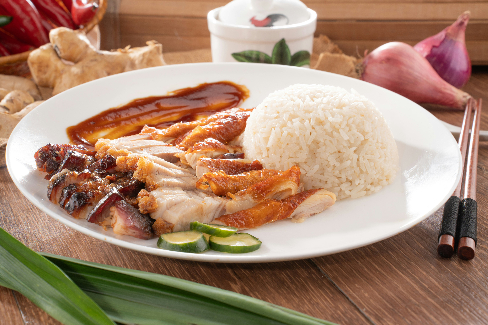
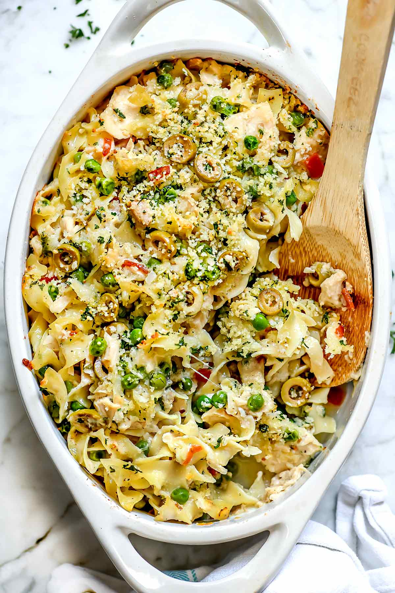
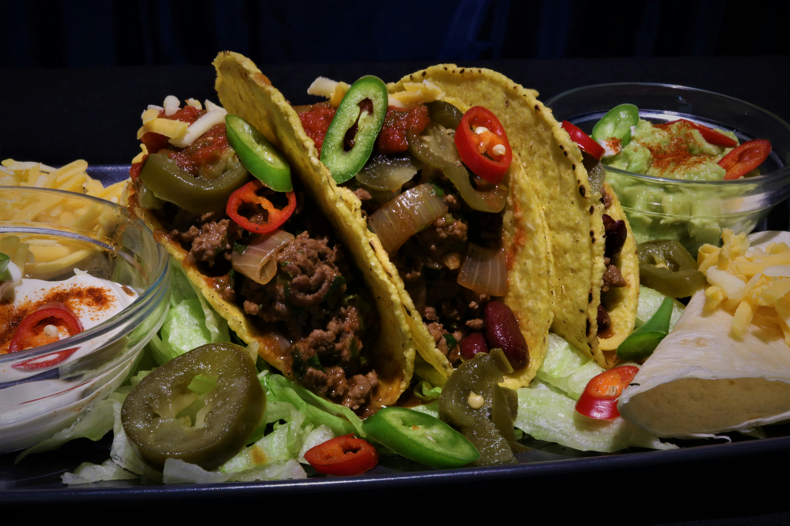

My Favorite: Rice and Chicken
My favorite dish is rice and chicken. You can make it in so many ways it's healthy and easy to make. I'm hispanic so we eat it with avocado, plantains, with different sauces, grilled, pan seared, and more! Here is my favorite recipe for rice and chicken.

| Ingredient | Amount |
|---|---|
| Rice | 1 cup |
| Water | 2 cups |
| Chicken Breast | 1 lb |
| Sazon Seasoning | To taste |
| Olive Oil | 1 tablespoon |
| Garlic Powder | 1 teaspoon |
| Paprika | 1 teaspoon |
Other Recipes to try!
Tuna Caserole:
| Ingredient | Amount |
|---|---|
| Tuna | 1 can |
| Egg noodles | 1 Pack |
| Cheese | 2 Cups |
| Chopped Onions | 1/4 cups |
| Potato Chips Crushed | 1 tablespoon |
| Garlic Powder | 1 teaspoon |
| Paprika | 1 teaspoon |
Beef Tacos:
| Ingredient | Amount |
|---|---|
| Taco Shells | 1 pack |
| Beef | 1 lb. |
| Cheese | 2 Cups |
| Lettuce | 1/4 cups |
| Sour cream | 1/2 cup |
| Garlic Powder | 1 teaspoon |
| Paprika | 1 teaspoon |